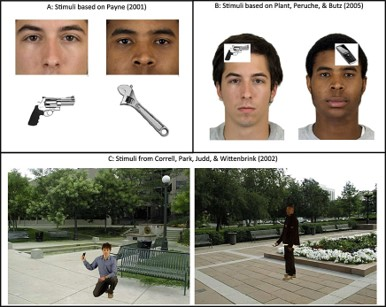

Heute werden wir uns mit der praktischen Anwendung des Drift-Diffusion Models (DDM) beschäftigen. Hierzu werden wir die Modellierung von Frenken et al. (2022) replizieren. Diese haben das DDM dazu verwendet, um die dem “Shooter-Bias” zu Grunde liegenden kognitiven Prozessen zu untersuchen. Hierzu werden wir fast-dm30 (Voss & Voss, 2007) nutzen, welches es ermöglicht das DDM mit Hilfe der ML-Diskrepanzfunktion zu schätzen. Ihr findet fast-dm auch im Teams Ordner des heutigen Termins.
1.1 Der Shooter - Bias
Wie schon in der letzten Sitzung vorgestellt handelt es sich beim beim First Person Shooter Task (FPST) um ein Paradigma, mit dem Stereotype und deren Auswirkungen auf Entscheidungen untersucht werden können. Hierbei werden üblicherweise verschiedene Ethnien (z.B. schwarze oder weiße Personen), entweder mit einer Waffe (threat) oder einem ungefährlichem Objekt (z.B. Telefon, harmless) gezeigt. Die Versuchspersonen werden instruiert unabhängig von der Hautdfarbe so schnell und korrekt wie möglich auf bewaffnete Ziele zu schiessen. Im Gegensatz dazu soll nicht auf unbewaffnete Ziele geschossen werden.

First Person Shooter Task Paradigm
Üblichweise findet man einen sog. Racial Bias, da die typischerweise Reaktionzeiten kürzer für bewaffnete, und länger für unbewaffnete Schwarze sind. Zudem zeigen Befunde, dass bei Schwarzen die Schwelle zum Schuss generell geringer ist, also eher liberaler entschieden wird (z.B. mehr inkorrekte Entscheidungen bei Schwarzen). Es gibt also eine signifikante Interaktion zwischen der Hautfarbe / Ethnie und dem tragen einer Waffe auf die Reaktionszeiten. Dies zeigt sich vorallem in Laienstichproben, wohingegen in Stichproben von Polizeibeamten die Befunde nicht ganz eindeutig sind.
1.2 Hypothesen
Frenken et al. (2022) nehmen an, dass dieser Racial-Bias möglichweise durch drei unterschiedliche Mechanismen zustande kommt, die sich durch das Diffusionsmodell trennen lassen.
Erstens durch sog. frequency stereotypes, also der Annahme, dass Schwarze beispielsweise häufiger Waffen tragen oder eine Gefahr darstellen. Dies führt in der Folge zu einer gesteigerten Bereitschaft zu Schießen. Es besteht also ein Bias in Richtung der Entscheidung zu Schießen, da eine implizite Korrelation von Schwarzen und Waffen oder Gefahren angenommen wird. Diese frequency hypothesis würde sich im FPST in einem Bias des Startpunktes z des Diffusionsmodelles auswirken, da schon eine a priori Tendenz zum Schießen bei schwarzen Targets besteht, unabhängig vom Objekt (threat vs. harmless).
Zweitens, durch die typicality hypothesis welche animmt, dass Schwarze auf einem konzeptuellen Level typischerweise als gefährlicher wahrgenommen werden. Hierbei wird die Waffe selbst und die schwarze Person unabhängig voneinander als Gefahr wahrgenommen. Dies führt zu einer Aktivierung sich überlappender konzeptueller kognitiver Cluster. Sind diese kongruent, so wird die Aufnahme von relevanten Informationen beschleunigt. Bei inkongruenten Clustern wird diese verlangsamt. Dies hätte keinen Einfluss auf einen a priori Bias, sondern direkt auf die Akkumulation taskrelevanter Informationen. Dies würde sich im Diffusionsmodell auf die Driftrate v auswirken. Hier würde man einen signifikanten Interaktionseffekt zwischen Hautfarbe und Objekt auf die Driftrate v erwarten.
Drittens könnte der Effekt auch durch einen response execution bias erklärt werden. Hier würden sich Stereotype auf die nicht entscheidungsrelevanten Prozesse, wie die Motorreaktion, auswirken und möglichweise die Vorbereitung dieser Reaktionen initiieren. Dies könnten zum Beispiel ein festerer Druck auf den Trigger der Waffe beim Anblick einer schwarzen Person sein. Dieser Effekt würde sich als Interaktion von Hautfarbe und Objekt auf der non-decision time t0 des DDMs zeigen, da anzunehmen ist, dass eine Waffe die gleichen Prozesse initiiert.
1.3 Generelles Vorgehen
Bei Diffusionmodellierungen empfiehlt sich meist die folgende Vorgehensweise, um ein komplettes Bild der Daten zu erhalten:
Analyse und Interpretation der Reaktionszeiten und Fehlerraten
Erstellen von einzelnen .dat - files für fast-dm
Spezifizieren der control-file (Modellspezifikation) für fast-dm
Modellschätzung
Ergebnisdatensatz für die Analyse säubern und vorbereiten
Modellvergleich mit dem Baseline-Modell
Analyse und Interpretation der Modellparameter des Modelles
Im heutigen Workshop werden wir in dieser Reihenfolge vorgehen. Zu jedem Schritt werdet ihr Code entweder selbst schreiben, oder ergänzen müssen. Wir werden zu einzelnen Punkten auch offene Fragen und Interpretationen diskutieren.
2 Analyse und Interpretation der Reaktionszeiten und Fehlerraten
Zunächst werden wir uns die deskriptiven Daten der Reaktionszeiten und Fehlerraten aus dem Datensatz ansehen, um abzuschätzen welche Effekte auf behavioraler Ebene zu finden sind. Es sei hier angemerkt, dass ich die exakten Werte aus dem Paper mit dem DM-Datensatz nicht reproduzieren konnte - die Effekte sind die zwar die gleichen, allerdings in leicht unterschiedlicher Ausprägung. Das liegt wahrscheinlich an unterschiedlichen Datensätzen die hierzu verwendet wurden, die zwar online zugänglich sind, aber die nicht ausreichend kommentiert waren um die exakten Analysen nachzuvollziehen.
2.1 Deskriptive Analyse der Fehlleraten und Reaktionszeiten
Hier seht ihr ein Balkendiagramm der Fehlerraten aus den unterschiedlichen Bedinungen:
Erstellt nun einen Datensatz desc_rt mit den mittleren Reaktionszeiten für jede Bedingungskonstellation von Hautfarbe und Objekt. Plottet anschließend die Werte in einem Barplot analog zu den Fehlerraten für die jeweiligen Bedingungskombinationen. Dazu kann geom_bar() verwendet werden.
2.2 Deskriptive Analyse der Reaktionszeiten
# Create summary dataset# YOUR CODE HEREdesc_rt <- dm_final %>%group_by(skin_color,object) %>%summarise(meanRT =mean(rt))# Create Bar Plot # RT ggplot(desc_rt,aes(x=factor(object,levels =c("phone","gun")),y=meanRT,fill=factor(skin_color,levels =c("white","black")))) +geom_bar(stat="identity", position =position_dodge())+scale_y_continuous(breaks =waiver()) +theme_apa() +scale_fill_d3(name="Skin Color") +geom_errorbar(aes(ymin=meanRT -1.96*se(meanRT),ymax=meanRT+1.96*se(meanRT),width=0.2),position =position_dodge(0.75)) +labs(x="Object",y="mean Reaction Time [ms]")
# Illustration of Interaction effect. fit_rt<-aov_ez(data = dm_final, id ="ID", within =c("skin_color","object"), dv ="rt")means <-emmeans(fit_rt, specs =~skin_color*object)pairs(means)
contrast estimate SE df t.ratio p.value
black gun - white gun -0.0335 0.00159 136 -21.022 <.0001
black gun - black phone -0.1198 0.00323 136 -37.049 <.0001
black gun - white phone -0.0972 0.00288 136 -33.735 <.0001
white gun - black phone -0.0863 0.00293 136 -29.436 <.0001
white gun - white phone -0.0637 0.00266 136 -23.980 <.0001
black phone - white phone 0.0226 0.00214 136 10.566 <.0001
P value adjustment: tukey method for comparing a family of 4 estimates
Zeigen die Reaktionszeit und Fehllerraten den erwarteten “Shooter-Bias” und wie äußert sich
dieser?
3 Diffusion Modelling
Nun modellieren wir die Daten mit dem Drift Diffusion Model (DDM). Die Autoren haben in der Studie ein volles DDM gefittet, um zu bewerten, welche Prozesse den behavioralen Reaktionszeits- und Fehlerratenmuster zu Grunde liegen. Aus den unterschiedlichen Effektmustern auf die geschätzten Parameter leiten die Autoren Evidenz für oder gegen die oben genannten Hypothesen ab.
3.1 Vorbereitung von fast-dm
3.1.1 Erstellen von einzelnen .dat - files für fast-dm
Fast-dm benötigt zum schätzen der Parameter eine Datei für jede einzelne VP, die alle Trialdaten für diese VP enthält. Um dies zu tun, nutzen wir dplyr um zunächst die nötigen Informationen aus dem Datensatz zu extrahieren und diese dann in einer neuen Datei für jede einzelnen Versuchperson zu speichern . Dazu können wir die Funktion group_split(subject) in dplyr nutzen, die für jede Beobachtung einen eigenen Datensatz erstellt und dann alle einzeln in einem Listenobjekt speichert.
# Funktioniert nur, wenn ihr dm_final in entsprechender Struktur erstellt habt! vp_list <- dm_final %>%select("ID","skin_color", "object", "response", "rt") %>%group_split(ID) mapply(write.table, vp_list, row.names =FALSE ,col.names=FALSE,USE.NAMES =TRUE,file=paste0(seq(1:length(unique(dm_final$ID))), '.dat'))
3.1.2 Spezifizieren der Control-File in fast-dm
Bevor wir das Modell nun fitten können, müssen wir ein controle-file erstellen, die das Modell spezifiziert das gefittet werden soll. Das umfasst die Definition der
freien Parameter
fixierten Parameter
Schätzmethode (Diskrepanzfuntion)
Datenformat
VP - Datenfiles
Outputfiles
precision (wichtiger Parameter, default Wert ist 3, sollte aber mindestens auf 4 stehen !)
Für die Diskrepanzfunktion können neben Maximum-Likelihood (ML) auch Chi-Square oder Kolmogorov-Smirnov gewählt werden. Diese haben andere statistische Eigenschaften, erfordern jedoch mehr Trials. Generell wird ML bei wenigen Trials als Schätzmethode empfohlen, zudem ermöglicht ML die Berechnung der unterschiedlichen Informationskriterien zur Bewertung des relativen Modelfits (Akaike Information Criterion, Bayesian Information Criterion).
Folgender Code dient für euch als Vorlage, zum erstellen einer Control-File, wenn ihr die entsprechenden Modifikationen vorgenommen habt, könnt ihr hiermit die Datei in eurem Working Directory erstellen!
cat(c("precision ",3, "\n", #Precision of Parameter Estimation "method ", "", "\n", # Optimization Criterion (Maximum Likelihood)"set ", "\n","set", "\n","set", "\n","set", "\n",#Fixation of Parameters to fixed values"depends ","\n","depends " ,"\n","depends ","\n","depends " ,"\n","format ", "\n","load *.dat", "\n","log ", "\n"),file=paste("shooter_dm.ctl",sep=""), sep="", fill=F)cat(c("precision ", 3, "\n", #Precision of Parameter Estimation "method ", "ml", "\n", # Optimization Criterion (Maximum Likelihood)"set ", "\n","set ", "\n","set ", "\n","set", "\n",#Fixation of Parameters to fixed values# Vary over which conditions (one line for each parameter)"format ", "\n","load *.dat", "\n","log ", "\n"),file=paste("shooter_dm_baseline.ctl",sep=""), sep="", fill=F)
Bitte schaut euch die unten stehende Tabelle an und sepzifiziert zwei Modelle:
Ein Modell, welches die Parameter über unterschiedliche experimentelle Manipulationen variieren lässt:
Schätzen der Drift-Rate (v) und non-decision time in Abhängigkeit von Hautfarbe & Objekt
Schätzen des Startpunktes (z) und der threshold separation (a) in Abhängigkeit der Hautfarbe
Fixiert die parameter szr, sv, d, p auf 0
speichert die Ergebnisse in der Datei “shooter_dm.txt”
speichtert die ctl-Datei unter “shooter_dm.ctl”
Ein Modell, welches die Parameter unabhängig von den experimentellen Manipulationen schätzt. Dies entspricht einem Modell, welches keine Effekte der Manipulationen annimmt und die Parameter unabhängig von diesen schätzt. Tip: Hier müssen im Vergleich zum vollen Modell nur Zeilen weggelassen werden.
speichtert die ctl-Datei unter shooter_dm.ctl
speichert die Ergebnisse in der Datei shooter_dm_baseline.txt
Hier findet ihr nochmals eine Erläuterung der unterschiedlichen Optionen, die in der .ctl file gesetzt werden müssen:
Control File Spezifikationen
3.2 Modellschätzung
Wenn alles korrekt spezifiziert ist, können wir die Modelle nun schätzen. Hierzu müssen die einzelnen .dat- files der Versuchpersonen im Working Directory sein. Ist das der Fall, könnt ihr fast-dm30.2 wie folgt aus über die R-Console aufrufen:
# Run fast-dm and estimate parameters# Check fast-dm directory beforehand# Windows# system("./fast-dm30.2/fast-dm shooter_dm.ctl")# system("./fast-dm30.2/fast-dm shooter_dm_baseline.ctl")#MacOSsystem("./fast-dm-mac/fast-dm shooter_dm.ctl")system("./fast-dm-mac/fast-dm shooter_dm_baseline.ctl")
Funktioniert alles, solltet einen solchen Output in der Konsole sehen:
Bevor wir mit der Anaylse beginnen, müssen wir zunächst prüfen, ob das Modell dass die Parameter über die experimentallen Bedingungen variiert, einen besseren Fit aufweißt, als das Baseline-Modell. Dieses Vorgehen dient hier als “Sanity-Check”. Solltet ihr mehrere Modelle gegeneinander testen, ist das Vorgehen das gleiche !
Bei explorativem Vorgehen sollten immer mehrere Modelle, die unterschiedliche Parameter variieren lassen, geschätzt und gegenübergestellt werden (model comparison approach). Geht man so vor, berechnet man den relativen Modelfit. Dieser wird üblicherweise mit dem Akaike- (AIC) und Baysian Information Criterium (BIC) berechnet (Akaike,1974; Schwarz, 1978).
Wenn hypothesengeleitet ein bestimmtes Modell angenommen und nur dieses gefittet wird, dann berechnet man den absoluten Modelfit, indem man Daten aus den geschätzen Parametern simuliert und diese mit den emprischen Daten korreliert. Das haben die Autoren getan, ich habe mich hier aber dazu entschieden, einen relativen Modelfit zu berechnen, um euch dieses - sehr häufige - Vorgehen zu erläutern.
Wichtig beim relativen Modelfit ist, dass es stets auch ein Baseline-Modell gibt, in dem alle Parameter frei geschätzt werden. Dies dient als Referenzmodell, welches annimmt, das die experimentellen Manipulationen keinen Effekt auf die Parameter haben. Ich stelle euch hier Funktionen bereit, mit denen AIC & BIC berechnet werden können. Diese liefern relative Werte über -grob gesagt- den Informationsverlust eurer Modelle und sind dimensionslose Werte, welche nur im Vergleich mit anderen Modellen interpretiert werden können.
Wie wir schon in der Sitzung über Parameterschätzung besprochen haben, kann die maximierte Likelihoodfunktion in die Deviance die Abweichung des Modelles zu den Daten transformiert werden:
\[ Deviance = -2 \cdot LL \]
Der AIC und der BIC quantifizieren nun diese Abweichung, indem sie die Komplexität des Modelles (Anzahl der Parameter k), sowie die Stichprobengröße (N; nur BIC) mit in die Gleichung einbeziehen:
Der BIC zieht also in Betracht, dass die Größe der Stichprobe den Fit künstlich erhöht und korrigiert daher für die Stichprobengröße im Strafterm. Über beide Kennwerte können später AIC / BIC - Weights (Wagenmakers & Farell, 2004) berechnet werden:
Die berechneten AIC/BIC-Weights können auch mit Hilfe von Luces Choice Rule zu Wahrscheinlichkeiten normalisiert werden. Es kann also für jedes Modell zusätzlich zur Evidence Ratio die Wahrscheinlichkeit der Gültigkeit über die jeweiligen Konkurrenzmodelle berechnet werden:
Fast-dm bietet aber auch die Möglichkeit, aus den geschätzten Modellen Reaktionszeitverteilungen für korrekte und inkorrekte Trials zu simulieren. Diese werden dann pro Quantil (meist für das 1. Quantil) mit den empirischen Reaktionszeiten korreliert und bilden ein Maß für den absoluten Modelfit. Wir werden uns die Berechnung des absoluten Modelfits in einer anderen Sitzung genauer ansehen!
Nun extrahieren wir aus dem Datensatz die Werte für die LogLikelihood (LL). Dabei ist zu beachten, dass fast-dm immer bereits die negative logLikelihood ausgibt, wir müssen diese also nicht mehr flektieren.
Ergänzt nun den unten stehenden Code, um zunächst den AIC zu berechnen, nutzt dazu die bereits vorhanden Funktionen. Um den AIC zu berechnen, muss die Anzahl der geschätzten Parameter im Modell herangezogen werden. Dazu müsst ihr auszählen, wie viele unterschiedliche Parameter pro Person geschätzt werden. Diese ergeben sich aus der Anzahl der Bedingungen, sowie der pro Bedingung variierten Parameter.
Beispiel: In Bedingung A (2-Level) werden 3 Parameter variiert. Das heisst alle 3 Parameter werden über die 2-level der Bedinungen A geschätzt, was insgesamt 6 freie Parameter ergibt !
Wie viele Parameter werden also im “Baseline” Model und im “Restricted” Model frei geschätzt?
# Extract -LL from results - fast-dm saves always the negative LogLikelihood LL_A <- model_a %>%select(dataset,Model,fit,nTrials)LL_B <- model_b %>%select(dataset,Model,fit,nTrials)# Remove subjects which did not converge in model b - Manche Subjects sind im komplexeren Modell nicht konvergiert, das zu wenig Daten vorhanden waren. Diese müssen wir aus dem Datensatz entfehrnen, damit beide gleich groß sind.LL_A <- model_a %>%filter(dataset %in% LL_B$dataset)# Modelltests ----# Calculating AIC for each Model # Settings (k= Number of est. Parameters, M = Number of Observations)# Baseline Model A: k = ?, M = Conducted Trials, LL = negative Likelihood-Values for each Person# Restricted Model B (v,t0,a,zr): k = ?, M = Conducted Trials, LL = negative Likelihood-Values for each PersonA_AIC <-function.aic(k=4, LL_A$fit)
Aus den berechneten AICs könnenw wir nun die Unterschiede der Modelle bezüglich des AIC berechnen. Dies ist der sogennante \(\Delta\)AIC-Wert, dieser kann dann zu Berechnung der jeweiligen AIC-weights genutzt werden. Hierzu muss der mittlere Fit nach Modell, sowie der \(\Delta\)AIC als neue Spalte berechnet werden. Hierzu muss das “kleinere” vom größeren Modell abgezogen wird. Nutzt hierfür dplyr (mit summarise() & mutate())! Berechnet anschließend mit Hilfe der aic.weight() Funktion das jeweilige AIC-weight beider Modelle!
Anschließend könnt ihr mit Hilfe der berechneten Weights sowohl die relative Evidenz, als auch die Wahrscheinlichkeit der Modelle (gegeben aller anderen Modelle) berechnen, orientiert euch hierfür an den oben stehenden Formeln!
# Berechnet nun den dAIC und dBIC dAIC<-Model_AICs %>%group_by(Model) %>%summarise(AIC =mean(AIC)) %>%mutate(dAIC = AIC -min(AIC))# Calculate AIC and BIC weightsaic_weights <-aic.weight(d_aics = dAIC$dAIC) #Vector of dAIC# Calculate Relative Evidence of Model B over Model A # (hint: do not round)aic_weights[2] / aic_weights[1]
[1] 1.892574e+28
# Calulate the probability of Model B over Model A # Probability Model B over Model A aic_weights[2] /sum(aic_weights)
[1] 1
Welches Modell fittet besser ?
4.1.1 Ergebnisdatensatz für die Analyse säubern und vorbereiten
Nun müssen wir die Daten aus fast-dm zunächst säubern und in ein tidy-Format bringen. Hierzu erfordert es einige fortgeschrittener dplyr-Funktionen, daher werden wir dies Zeile für Zeile zusammen durchgehen:
# Tidy Up Results for Analysis# Select only parameter estimates# Recode Driftrate to positive onlyshooter_est_v_t0<- shooter_dm %>%select(dataset, starts_with(c("t0", "v"))) %>%mutate(v_black_gun =case_when(v_black_gun <0~ v_black_gun *-1,TRUE~ v_black_gun),v_white_gun =case_when(v_white_gun <0~ v_white_gun *-1,TRUE~ v_white_gun))# Create different Datasets for zr & a and t0 & v # and bring in long format for analysisshooter_est_z_a <- shooter_dm %>%select(dataset, starts_with(c("z", "a")))theta_col_obj<-pivot_longer(shooter_est_v_t0, cols =starts_with(c("t0","v")),names_to =c("theta","color","object"),values_to ="estimate",names_sep ="_")theta_col <-pivot_longer(shooter_est_z_a, cols =starts_with(c("z","a")),names_to =c("theta","color"),values_to ="estimate", names_sep ="_")
4.2 Varianzanalysen und Kontraste
Nun führen wir Varianzanalysen durch, um die Effekte der experimentellen Manipulationen auf die Parameter zu prüfen. Hierzu müssen wir zunächst für jeden Parameter einen eigenen Datensatz erstellen. Nutzt hierzu dplyr, um aus den Datensätzen theta_col und theta_col_obj neue Datzensätze zu erstellen.
Dann nutzen wir das Paket afex um ANOVAs zu berechnen, hierzu habe ich euch den Code bereits geschrieben. Welche Effekte und welche Interpretationen lassen sich aus den Ergebnissen ableiten ? Welche Hypothese der Autoren wird hierdurch bestätigt, welche widerlegt?
Erstellt dann aus den neuen Datensätzen zusätzliche summary-Datensätze, in welchen ihr je nach Parameter und experimenteller Manipulation die entsprechenden Mittelwerte und Standardfehler berechnet.
# Run ANOVA with afex to check group differences and estimate marginal means from results# Create Datasets for every Parameter.# Sample SizeSubject =unique(length(shooter_dm$dataset))aov_zr <-filter(theta_col, theta=="zr")aov_a <-filter(theta_col, theta=="a")aov_t0 <-filter(theta_col_obj, theta=="t0")aov_v <-filter(theta_col_obj, theta=="v")zr_result <-afex::aov_ez(id ="dataset",dv ="estimate",data = aov_zr, within ="color")# Estimate means and calculate pairwise contrastsmeans_zr<-emmeans(zr_result,specs ="color")pairs(means_zr,reverse = T)
contrast estimate SE df t.ratio p.value
white - black 0.035 0.0228 129 1.537 0.1267
contrast estimate SE df t.ratio p.value
white gun - black gun 0.0323 0.00544 129 5.943 <.0001
black phone - black gun 0.1042 0.00673 129 15.488 <.0001
black phone - white gun 0.0719 0.00678 129 10.610 <.0001
white phone - black gun 0.0837 0.00573 129 14.626 <.0001
white phone - white gun 0.0514 0.00477 129 10.791 <.0001
white phone - black phone -0.0205 0.00641 129 -3.200 0.0017
P value adjustment: holm method for 6 tests
contrast estimate SE df t.ratio p.value
white gun - black gun -2.266 0.593 129 -3.819 0.0010
black phone - black gun 2.870 1.136 129 2.527 0.0255
black phone - white gun 5.137 0.982 129 5.233 <.0001
white phone - black gun -0.232 0.856 129 -0.271 0.7868
white phone - white gun 2.034 0.702 129 2.899 0.0176
white phone - black phone -3.102 1.103 129 -2.813 0.0176
P value adjustment: holm method for 6 tests
Im letzten Schritt bietet es sich an, die Ergebnisse mit Hilfe von ggplot zu visualisieren. Verwendet hierzu die von euch erstellten summary-Datensätze. Nutz hierzu wieder ggplot und geom_bar(), sowie geom_errorbar(). Erstellt für jeden Parameter einen eigenen Plot. Ihr könnt alle Plots in einem Grid zu einem Plot zusammenführen, wenn ihr aus dem Package gridExtra den Befehl grid.arrange(), verwendet.
Beschriftet die Plots, als würden sie in einer Publikation erscheinen (keine Variablennamen aus R, Legede, gut erkennbare Farben etc.)
# For zz <-ggplot(summary_z,aes(x=factor(color,levels =c("white","black")),y=mean_z,fill=color)) +scale_y_continuous(breaks =seq(-0.2,0.2,0.05), limits =c(-0.2,0.2)) +geom_bar(stat="identity",width=0.4, position =position_dodge(0.4)) +scale_fill_d3(name="Skin Color") +theme_apa() +geom_errorbar(aes(ymin=mean_z-1.96*se_z,ymax=mean_z+1.96*se_z,width=0.1),position=position_dodge(0.4)) +labs(title ="Effect of skin color on starting bias z", x="Skin Color", y="Estimated deviation from 0.5 of z") +theme(legend.position ="none") # For aa <-ggplot(summary_a,aes(x=factor(color,levels =c("white","black")),y=mean_a,fill=color)) +geom_bar(stat="identity",width=0.4) +scale_fill_d3(name="Skin Color")+theme_apa() +geom_errorbar(aes(ymin=mean_a-1.96*se_a,ymax=mean_a+1.96*se_a, group=color, width=0.1))+labs(title ="Effect of skin color on threshold separation a", x="Skin Color",y="Estimated marginal mean for a")+theme(legend.position ="none")# For t0t0 <-ggplot(summary_t0,aes(x=factor(object,levels =c("phone","gun")),y=mean_t0,fill=factor(color,levels =c("white","black")))) +geom_bar(stat="identity",width=0.4, position =position_dodge()) +scale_fill_d3(name="Skin Color") +theme_apa() +geom_errorbar(aes(ymin=mean_t0-1.96*se_t0,ymax=mean_t0+1.96*se_t0,width=0.1),position=position_dodge(0.4)) +labs(title ="Effect of skin color and object on non-decision time t0", x="Object",y="Estimated Marginal mean for t0")# For vv <-ggplot(summary_v,aes(x=factor(object,levels =c("phone","gun")),y=mean_v,fill=factor(color,levels =c("white","black")))) +geom_bar(stat="identity",width=0.4, position =position_dodge()) +scale_fill_d3(name="Skin Color") +theme_apa() +geom_errorbar(aes(ymin=mean_v-1.96*se_v,ymax=mean_v+1.96*se_v,width=0.1),position=position_dodge(0.4)) +labs(title ="Effect of skin color and object on drift rate v", x="Object", y="Estimated Marginal mean for v")
# Arrange Grid with gridExtraggarrange(a,z,v,t0, ncol=2, nrow=2, common.legend =TRUE, legend="bottom")
5 Interpretation & Diskussion
Wenn man die Ergebnisse der Modellierungen in betracht zieht, würdet ihr zu dem Schluss kommen, dass wir die Ergebnisse aus der zweiten Studie von Frenken et al. (2022) repliziert haben ? Welche Kritikpunkte hättet ihr an der Interpretation der Modellierung und / oder der Befunde ? Setzt euch kurz in Gruppen von 2-3 Leuten zusammen und diskutiert folgende Punkte:
Wie könnte weitere Forschung in Bezug auf das Diffusionsmodell zu diesem Thema aussehen?
Welche Kritikpunkte habt ihr an der Studie von Frenken et al. (2022) ?
Welche Interventionsmöglichkeiten ergeben sich aus den Ergebnissen der Studie ?
6 Literatur
Frenken, M., Hemmerich, W., Izydorczyk, D., Scharf, S., & Imhoff, R. (2022). Cognitive processes behind the shooter bias: Dissecting response bias, motor preparation and information accumulation. Journal of Experimental Social Psychology, 98, 104230.
Voss, A., Voss, J. Fast-dm: A free program for efficient diffusion model analysis. Behavior Research Methods, 39, 767–775 (2007). https://doi.org/10.3758/BF03192967
Voss, A., Voss, J., & Lerche, V. (2015). Assessing cognitive processes with diffusion model analyses: A tutorial based on fast-dm-30. Frontiers in psychology, 6, 336.
Wagenmakers, E.-J., & Farrell, S. (2004). AIC model selection using akaike weights. Psychonomic Bulletin & Review, 11(1), 192–196.https://doi.org/10.3758/BF03206482